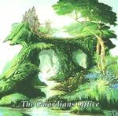

Home Artist links Label link

The Guardians Office - The Guardians Office
| Artist: | The Guardians Office |
| Title: | The Guardians Office |
| Label: | Cyclops CYCL128 |
| Length(s): | 47 minutes |
| Year(s) of release: | 2003 |
| Month of review: | [06/2003] |
Line up
Tony Johannessen - vocals, keys, backing vocals
Morten Eriksen - guitars, bass
Froydis Maurtvedt - bass, bass pedals
Pal Sovik - drums, backing vocals
Tracks
| 1) | Hit The Ground | 4.39
|
| 2) | Dark Girl | 7.27
|
| 3) | Play Of Your Life | 7.35
|
| 4) | The Room Below | 5.53
|
| 5) | Office Of Hard Cash | 5.40
|
| 6) | Loser In The Sunset | 5.04
|
| 7) | Heat Of That Sound | 4.53
|
| 8) | The Guardian | 5.37
|
Summary
The Guardian's Office is the new band of Fruitcake's Pal Sovik. There's no clear composer info, but the semblance with Fruitcake material is clear.
The music
When reviewing a Fruitcake album last year, I noted that the compositions seem to be made up out of building blocks. Although this is not Fruitcake, we are still presented with compositions that sound belaboured and halting, especially in drums and bass. There is no flow in the compositions in general, despite the presence of a lot of meandering sections. Although a track as The Room Below might be a tad rockier than one would expect, aside from several tracks being based on a blueslike structure, there is no spunk. Loser In The Sunset has a nice chorus, and is probably the most fluent and symphonic composition on the album, although Dark Girl also has its symphonic moments. Heat Of That Sound starts off with the exact same bass pedal sound as used in so many Fruitcake tracks, and which is abundant in other tracks as well. Some nice moments, but never stringed together to even a full track.
On sound quality: the sound is a bit flat, not exactly spacious.
Conclusion
The Guardian's Office is very much like Fruitcake: slow, plodding and overly deliberate compositions that only rarely please. The addition of some hackneyed guitar riffing (reminding of Deep Purple at times) and blues structures only makes things worse, making the music less progressive and more standard. The make over didn't work, as far as I'm concerned, just another Fruitcake album I could have done without. Don't get me wrong: I don't think this is the worst ever made, but the more I hear of Fruitcake/Guardian's Office, the clearer it becomes that having just one album by them suffices for all who aren't such insane collectors as I am. And this would not be that album.
© Roberto Lambooy